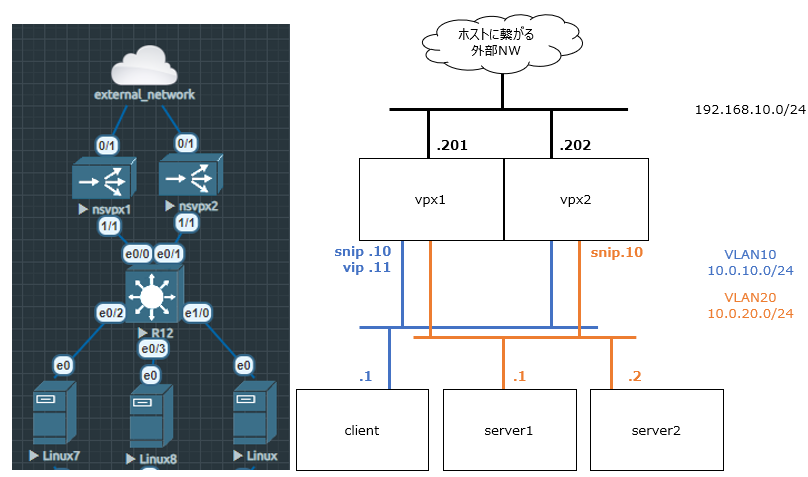
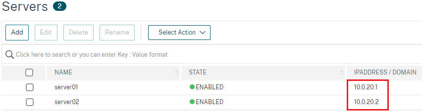
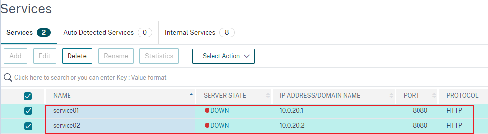
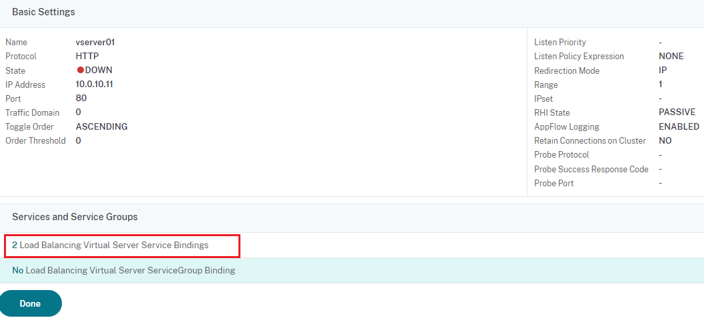
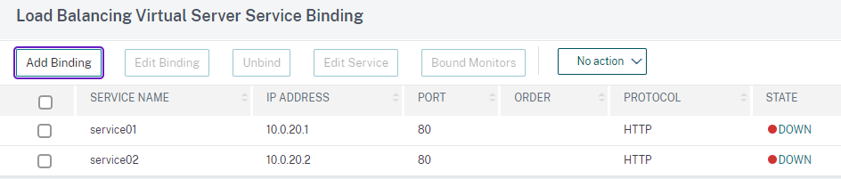
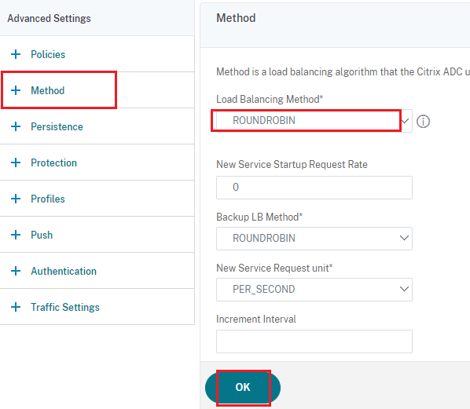
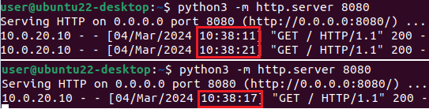

Loadbalancing
0. はじめに
基本機能であるロードバランスについて確認していきます。
今回のトポロジは以下のようになっています。
clientからvipへのアクセスをserver1,server2に振り分けていきます。

1. VPXの設定
赤枠を指定したServerを2つ定義します。
Traffic Management > Load Balancing > Server

作成したServerを適切なServiceに紐づけます。
Traffic Management > Load Balancing > Services

vServerを作成し、作成した2つのServiceを紐づけます。
今回はラウンドロビンで振り分けられることを確認します。
Traffic Management > Load Balancing > Virtual Servers



2. 確認
server1,server2それぞれでhttp/8080を受け付けます。
python3 -m http.server 8080
クライアント側のブラウザでCtrl + F5で3回アクセスしました。
サーバ側のログを見ると、交互にアクセスされていることが確認できました。
